The return of the big bad inflation?
Is Inflation Coming back?
Inflation
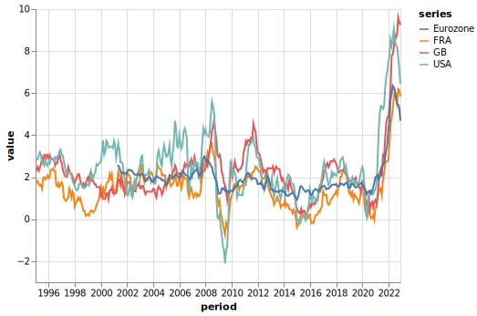CPI Inflation (Source IMF)
- Inflation rates are currently very high
- At levels never seen by European Central Bank, since its creation in 1998
Inflation
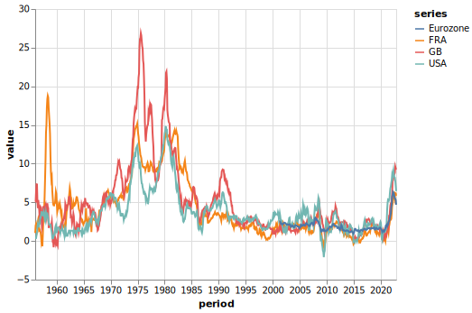CPI Inflation (Source IMF)
- There were even higher levels in the 70s (and 50s in France)
- All economists / policymakers remember this period
Emerging / Developped Markets
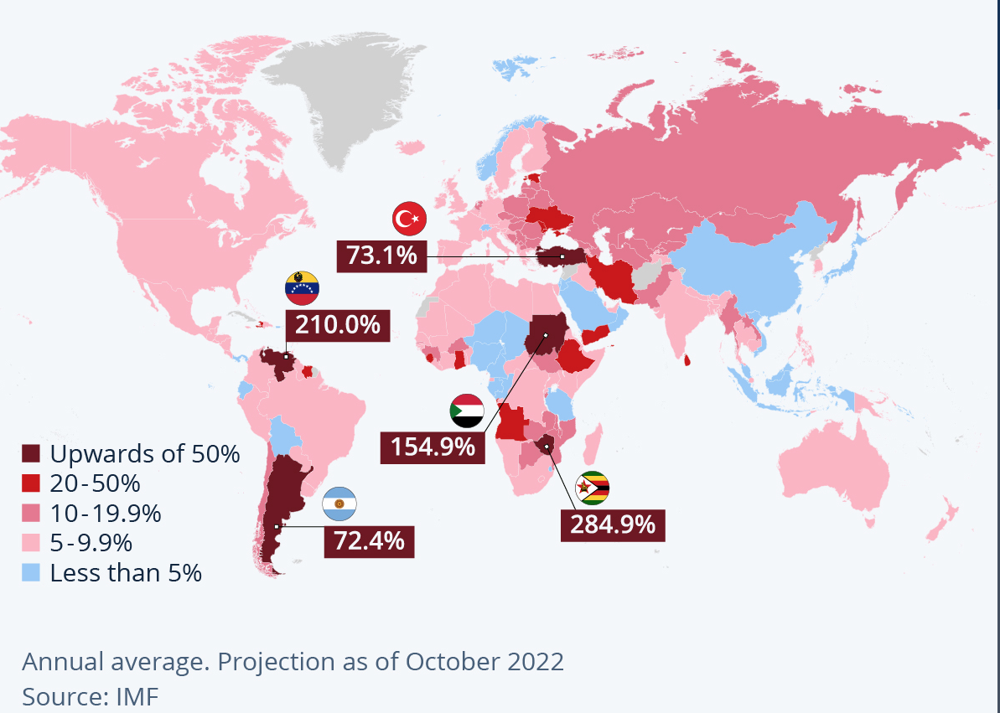World Inflation Outlook (2022)
Emerging / Developped Markets
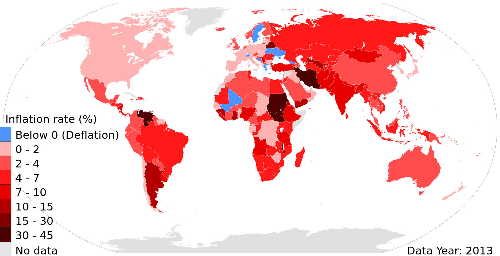
- Inflation has never disappeared from the world
- The problem is quite different in developped and emerging countries1
The cost of Inflation
The cost of Inflation
Inflation is a ‘wicked problem’ − speech by Huw Pill
Good evening everyone. It is a great pleasure to be here at the Warwick Think Tank today. Thanks to the organisers for the invitation to participate.
I am sure that you have many questions about the outlook for the UK economy. We all do. I am looking forward to discussing those in a moment. But before we turn to that discussion, I thought I would kick-off with a few remarks about the framework within which monetary policy works.
The first thing to say is that the objective of monetary policy in the UK is very clear.
The Bank of England’s Monetary Policy Committee (MPC) has the objective of price stability. Through achieving price stability, monetary policy creates an environment in which firms and households can make the longer-term plans and investment decisions that generate the innovation, dynamism and productivity that ultimately drive growth and prosperity.
Price stability has been operationalised in the form of an inflation target of 2% for the consumer price index (CPI). This target holds at all times. The MPC therefore needs to achieve this target on a sustainable basis: it is not a target for one moment or horizon, but must be achieved on an ongoing basis over the medium term.
While we have seen some easing in the past couple of months as the impact of past energy price rises starts to recede, UK CPI inflation is still in double digits. That is unacceptably high.
In line with its mandate, the MPC has taken action to bring inflation back to the 2% target on a sustainable basis.
Over the past 18 months since I joined the MPC: we have raised Bank Rate by almost 400 basis points; we have halted asset purchases and started to run down the portfolio of assets held as a result of quantitative easing (QE); and we have changed the character of our communication about the economic outlook and its implications for policy.
Taken all together, this represents a significant tightening of the monetary policy stance, commensurate to the significant challenges to price stability we have been and are facing. These challenges come from recent rises in European wholesale energy prices; from disruptions to global supply chains; from the strength of corporate pricing power; and from tightness in the UK labour market. All of these challenges continue to threaten or linger.
The MPC has done a lot to address these challenges. But has it done enough?
Famously, monetary policy works with ‘long and variable lags’.[1] As a result, much of the policy tightening announced by the MPC over the past year still has to work its way through to the economy in general, and to price developments in particular. There is a lot of policy tightening still in the pipeline.[2]
Given this, when taking its decisions the MPC needs to be forward-looking in assessing inflationary pressures. That is why we put emphasis on inflation forecasts, both in our analysis of the economic situation and in our communication of policy decisions and their rationale to financial markets and the public.[3]
The MPC needs to calibrate its monetary policy actions such that they have the appropriate impact on inflation as the lags in transmission unwind. In doing so, the MPC must recognise and quantify how much of the effect of its previous policy decisions still has to come through.
All the while, the MPC needs to recognise the uncertainties it faces. As the American baseball player turned philosopher Yogi Berra famously said: “It is difficult to make forecasts – especially about the future”. New shocks to the economy can always happen (as my own experience on the MPC over the past 18 months amply demonstrates). And how previous disturbances to the economy ultimately affect inflation is itself unclear.
This uncertainty is why the MPC has always emphasised the risks around its central forecasts. Famously, the MPC has presented its forecasts in the form of gradated fan charts, rather than as simple paths for the modal outlook.[4] As recent experience demonstrates, MPC communication has emphasised the skews and risks around the central projection as much as the central projection itself. Recognising the uncertainties it faces, the MPC must manage the balance of risks to the inflation outlook, taking account of the likely costs and duration of deviations from the inflation target.
This so-called ‘risk management’ approach to monetary policy has been at the heart of how central banks have managed policy of late, particularly in the face of deflationary concerns stemming from any lower bound on policy interest rates.[5] And it continues to influence thinking now, given concerns that so-called second round effects in price, wage and cost setting behaviour could create a self-sustaining momentum in inflation that persists even after the initial inflationary impulse from higher energy prices recedes.
How does all this fit into recent MPC policy decisions?
Changes in the MPC’s communication following its February meeting reflect an evolution in the Committee’s assessment of the inflation outlook. While headline inflation is set to ease this year as the large increases in energy bills seen during 2022 begin to drop out of the annual calculation, the evolution of corporate pricing setting, wage developments and services prices is consistent with greater-than-desirable strength in the underlying, more persistent component of inflation.
Recognising that its earlier actions are now gaining traction, the MPC needs to ensure that it does enough to return inflation to target, while guarding against the possibility that it does either too much or – for that matter – too little. Finding that balance is the central challenge for monetary policy at present.
Given my assessment of the data as they stand and recognising the substantial policy tightening already implemented, in my view the MPC’s current priority must be to ensure we see the job through, so as to return inflation to target on a sustainable and lasting basis. It remains premature to declare victory over the unacceptably higher rates of inflation we have seen recently.
Continuing to raise rates at the pace and magnitude seen over the past year would eventually – and perhaps soon – imply that monetary policy had cumulatively been tightened too much. Nevertheless, given where we stand, I still choose to emphasise the MPC’s need to be watchful for signs of greater-than-expected persistence in inflationary pressure. And I would flag the need for the Committee to maintain a readiness to act to address any such persistence should it emerge.
We have long signalled how we assess the potential for inflation persistence: by looking at the strength of corporate pricing power along supply chains, by evaluating the tightness of the labour market, by weighing up wage developments and their implications for services price inflation.
The past few days have yielded some new information along these dimensions.
Tuesday’s labour market release pointed to signs that the UK labour market loosened a little in the fourth quarter, in line with the narrative underpinning the MPC’s February Monetary Policy Report. The ratio of vacancies to unemployment – which we consider one of the more reliable summary indicators of labour market tightness in recent years – fell to 0.9, from a peak of 1.1 back in August. That chimes with recent intelligence from our network of Agents and their corporate contacts across the country, which points to some easing in recruitment difficulties.
Nonetheless, while pointing to some easing in recent months, these indicators suggest the labour market remains tight in an absolute sense relative to historical experience. In turn, this is consistent with continued strength in UK wage growth. Annual private sector regular pay growth[6] was 7.3% in the latest report, 0.1pp higher than expected in the MPR, even if the momentum of wage growth may now be slowing.
Turning to yesterday’s CPI data, inflation fell to 10.1% in January, from 10.5% in December. On the month, this mainly owed to an easing in services and fuel price inflation, although developments in historically very volatile components such as airfares counted for a large part of the former.
Both the March and May MPC meetings represent points at which the Committee can again assess the implications of incoming data for the monetary policy stance, with the latter having the advantage of an updated comprehensive assessment in the form of the MPC forecasts.
As ever, I will come to my own conclusions about Bank Rate on those occasions on the basis of my assessment of the data flow, with my decision focused on meeting the MPC’s price stability mandate through achieving the 2% inflation target on a sustained and lasting basis.
Before opening up to questions, I wanted to conclude with a few comments on the title of my remarks this evening: ‘Inflation is a wicked problem’.
The challenges posed by the cost-of-living squeeze are all too real for many households and businesses. This is especially true for those households towards the lower end of the income distribution, which spend a greater share of their income on food and energy – items for which prices have risen the most. Addressing these challenges – and containing the difficult implications of the cost-of-living squeeze – motivates the MPC’s actions to return inflation to target.
But in talking about ‘wickedness’ this evening, I am referring to a different dimension of the inflation problem. This draws on the social science literature, where a ‘wicked problem’ is defined as one that – because of the complex web of interdependencies within which it is embedded – is resistant to resolution.[7] In particular, the effort to solve one aspect of a ‘wicked problem’ may reveal or create other related problems across other aspects.
This literature describes a tendency to address ‘wicked problems’ by converting them into so-called ‘tame problems’ or ‘puzzles’.[8] In many cases, this involves redefining or re-expressing the underlying problem in terms of more controllable (or at least measurable) outcomes or objectives. And, in association with this process or redefinition, responsibility for addressing the problem is often transferred from the political domain – where the complex interdependencies can lead to a ‘log jam’ in decision making owing to the impossibility of reconciling various competing interests – to supposedly dispassionate and independent experts or technocrats.
The parallels with efforts to achieve price stability are obvious.
As former Vice-Chairman of the Federal Reserve Board Alan Blinder once famously remarked, the economically meaningful definition of price stability is an environment where the economic decisions of firms and households are neither delayed nor distorted by the incidence of and/or concerns about inflation.[9] Judging whether this has been achieved is inevitably somewhat subjective. And, given the multitude of behaviours, shocks and policies that influence price developments in the shorter term, one can easily see how the achievement of price stability in a truly complex economic environment has the character of a ‘wicked problem’.
Over recent decades, the policy design response to meet the challenges created by such complexity has been to ‘tame’ that wicked problem. Price stability is operationalised as an inflation target – an objectively achievable rate of inflation in a particular price index. Through the institutional mechanism of independent central banks and MPCs, technocrats are charged with solving the ‘puzzle’ of achieving the inflation target through employing the potentially powerful, but specific, tool of monetary policy.
In the UK at least, such ‘taming’ of the challenges we face in achieving price stability has yielded a quarter of a century of improved macroeconomic performance, with inflation much lower and more stable on average than in the decades prior to the introduction of inflation targeting. There is much to admire in that.
Moreover, the unacceptably high inflation we now face as a result of geo-political developments and their impact on commodity prices should not detract from what has been achieved over the entire span of the inflation targeting era. Indeed, the anchor provided by the inflation target for both the formulation and communication of monetary policy is all the more valuable when price stability is being challenged by adverse external shocks.
But we also need to be wary that ‘taming’ of the problem does not lead us astray. In particular, we need to recognise that solving the inflation targeting ‘puzzle’ by returning CPI inflation to 2% at a specific point in time does not, of itself, represent a comprehensive or complete solution to the underlying problem of achieving price stability.[10]
It is not ‘job done, we can now move on’ to other issues. On the contrary, to paraphrase Thomas Jefferson: the price of achieving meaningful price stability is eternal vigilance.
For one of the characteristics of a ‘wicked problem’ is that it does not a have a ‘stopping rule’. In other words, it is not possible to say that a ‘wicked problem’ has been definitively solved, once and for all. Converting the ‘wicked problem’ into a ‘puzzle’ appears to make resolution more achievable and likely, but potentially at the risk of missing a key aspect of what makes the underlying problem so challenging.
On the MPC, we are focused on returning CPI inflation to the 2% target in line with our remit. Given our mandate, that is what we should, have to and are doing.
In parallel, we need to recognise that returning inflation to target is not the end of the story. We have to keep it there on a lasting and sustained basis.
Even if we return to more benign times in the coming years, the Bank of England will still need to make investments in human, analytical, technological and institutional capital to ensure it has the capacity and capability to meet its price stability mandate. And on the basis of those investments, it will need to ensure that shocks that create either inflationary or disinflationary pressures in the future are met with policy responses that support price stability.
Many of you are studying economics (or related disciplines) here at Warwick. At the Bank, we are always seeking smart and dedicated recruits that want to contribute to our work.
Even after the MPC has brought CPI inflation back to 2% – as I am sure it will – you can be sure that there will still be plenty of interesting and important work for you to do at the Bank if we succeed in attracting you to Threadneedle Street.
The views expressed in this speech are not necessarily those of the Bank of England or the Monetary Policy Committee.
I would particularly like to thank Saba Alam, Andrew Bailey, Harvey Daniell, Swati Dhingra, Jonathan Haskell, Catherine Mann and Martin Seneca for helpful comments on earlier drafts of these remarks.
The responsibility for all remaining errors is my own.
The cost of Inflation
Inflation is a ‘wicked problem’ − speech by Huw Pill
Good evening everyone. It is a great pleasure to be here at the Warwick Think Tank today. Thanks to the organisers for the invitation to participate.
…
The Bank of England’s Monetary Policy Committee (MPC) has the objective of price stability. Through achieving price stability, monetary policy creates an environment in which firms and households can make the longer-term plans and investment decisions that generate the innovation, dynamism and productivity that ultimately drive growth and prosperity.
…
A theoretical argument: The cost of misallocation
The redistribution caused by inflation introduces distortions in many markets.
Higher inflation is even more volatile and distorts markets even more:
- it makes the calculation of relative prices more hazardous
Hyperinflation is an extreme version
- defined by Cagan as inflation>50% per month
- follows extreme shocks/conditions
- usually associated with big government deficits
Why should we fear inflation?
- increase in cost of living
- wasted savings
- excessive inflation / hyperinflation
- deflation
- uncertainty
- inflation tax
Publicité Leclerc
Cost of Living
The Money Illusion
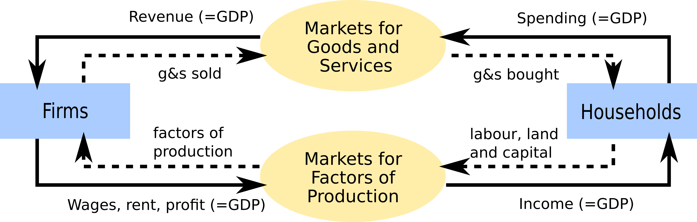The Circle Flow Diagram
- By definition: total real income equals total revenue
- As long as GDP grows there is no aggregate loss in purchasing power
- The consensus to increase purchasing power is a fool’s game
- … But some categories (workers, bottom earners…) can loose more
Redistributive Effects of Inflation
Inflation has redistributive effects through different channels1:
- consumption channel
- wealth redistribution channel
- renegociation channel
Redistributive Effects of Inflation: the consumption channel
Not everybody consumes the same consumption goods1
The consumption basket depends on income
Inflation hits some goods more than others
And affects some households more than others
Which ones?
Consumption Inequality in the United States
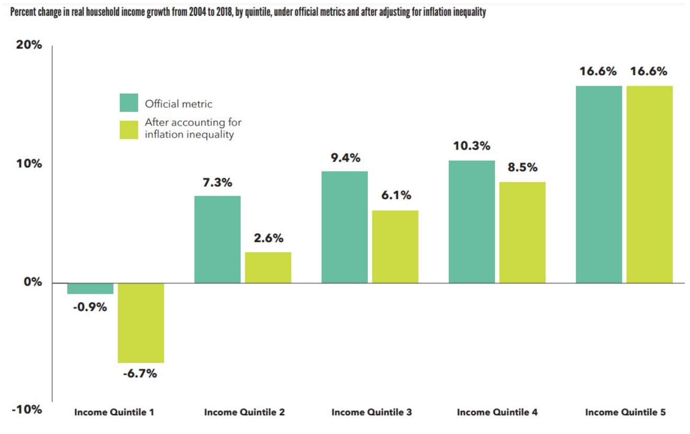
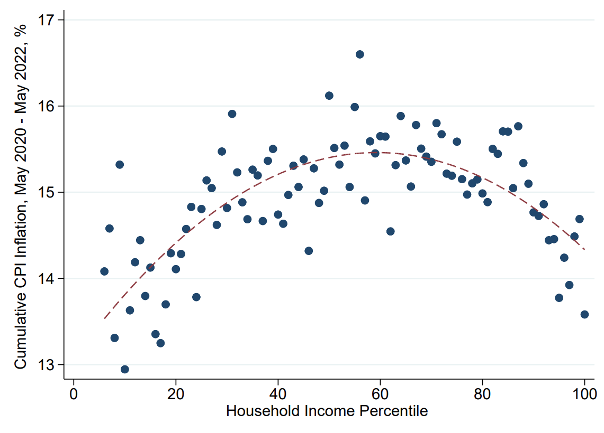
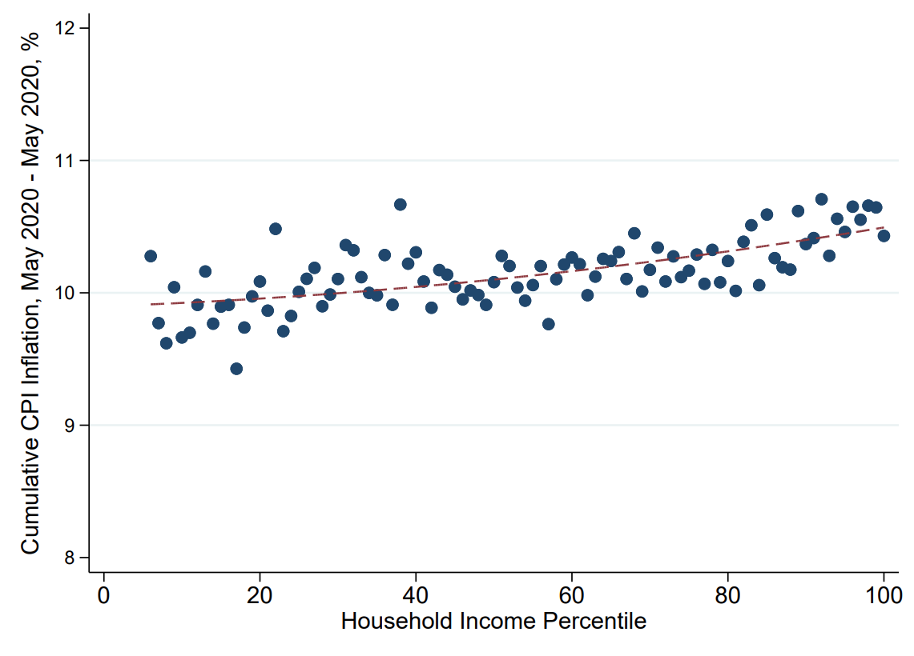
- In the last 20 years, the bottom earners had the lowest growth in real income. This is even clearer when incorporating inflation inequality.
- Since 2020, inflation has been more detrimental to middle income…
- This is mostly due to rising prices in energy.
Redistributive Effects of Inflation
Savers and Borrowers
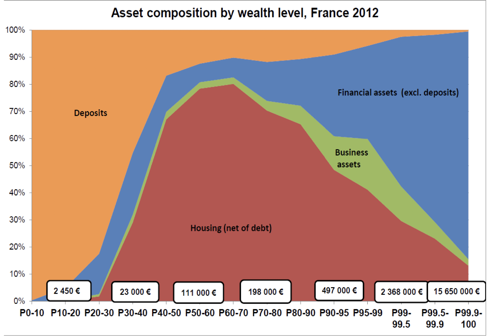Composition of Assets across the Wealth Distribution
Redistributive Effects of Inflation
Savers and Borrowers
- In general inflation benefits borrowers rather than savers
- but this depends on how assets/liabilities are indexed to inflation
- Recently, a lot of attention in the literature1 has been devoted to “Wealty Hand to Mouth”: wealthy household, with low available income because their wealth is illiquid. They are very exposed to changes in their cost of living.
Redistributive Effects of Inflation:
between different agents in the economy
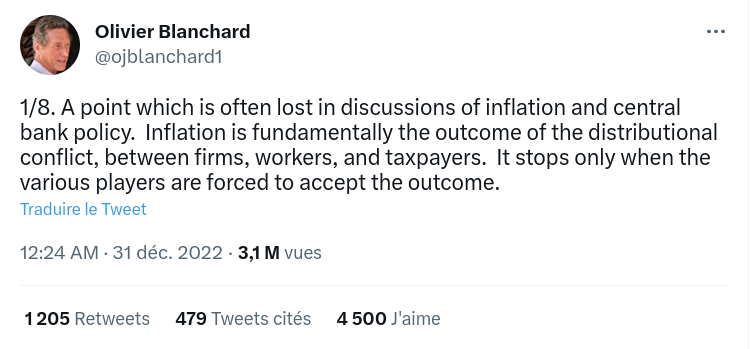. . . To understand the context, we need to go back in history.
Wages and salary
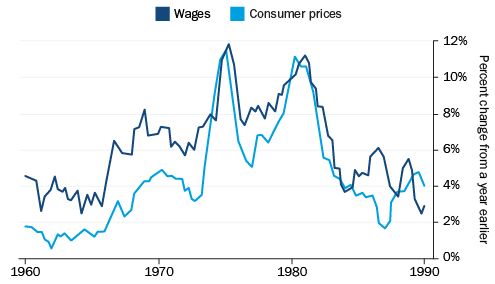Growth in wage rates and consumer prices, US
There is a clear correlation between cost of living and salary.
In the 60s and 70s price inflation and wage inflation were accelerating together.
The inflation spiral
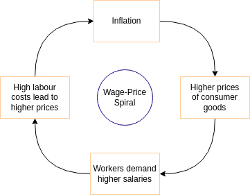
It lead economists to believe there was a wage-price inflation spiral…
- prices increase
- \(\Rightarrow\) workers demand higher wages
- \(\Rightarrow\) production costs increase
- \(\Rightarrow\) prices increase, ….
The inflation spiral
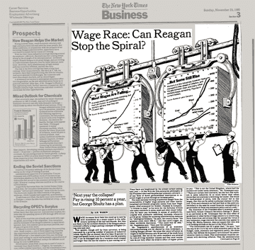
…And advocate policy measures to limit inflation
- Nixon: 1970, price-freeze on wage and prices
- to no avail
This inflation stopped with the Volcker plan
- Fed raised interest rates from 11% to 20% !
- inflation was brought under control at the cost of a deep recession in 1982/1983
On the bright side: it has demonstrated a central bank can get rid of inflation
On the dark side: who wants to engineer a recession???
The inflation spiral
Nowadays out of control wage-price spirals are believed to be unlikely events
- agents correctly anticipate future inflation
- incorporate these expectations into wage- and price- setting
- when all markets are in equilibrium, inflation returns towards equilibrium
But the nexus wage / price still remains relevant:
- more inflation triggers more wage / price negociation…
- … and has the potential to redistribute purchasing power between firms, consumers, workers
Where does inflation (currently) comes from?
The main sources of inflation
- demand-pull shock
- cost-push shock
- imported inflation
- expectations
Cost-push shock
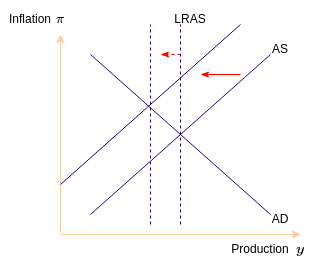
In the New-Keynesian fashion, we plot inflation against output
- A cost-push shock moves the supply curve to the left
- In equilibrium inflation increases
Which shocks affect the supply curve? (Econ 101)
- productivity shocks
- changes in the labour market
- increased costs of materials
- uncertainty
- …
These shocks affect both the long run and the short run supply curve
Demand-pull shock
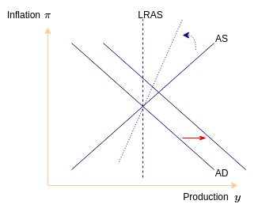
- A demand-pull shock moves the demand curve to the right
- In the short term, production and inflation increase
- Then as prices adjust:
- production decreases and inflation increases further
Which shocks affect the demand curve? (Econ 101)
- preference shocks
- changes in uncertainty / expectations
- …
Two recent shocks: covid
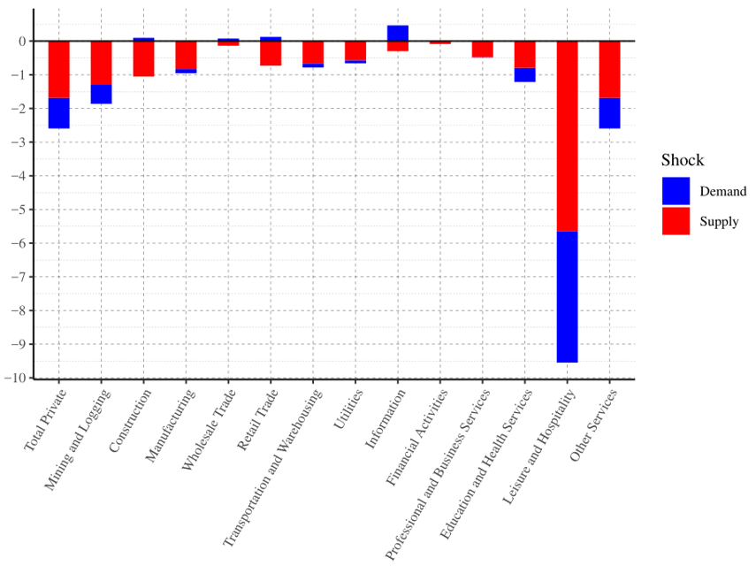 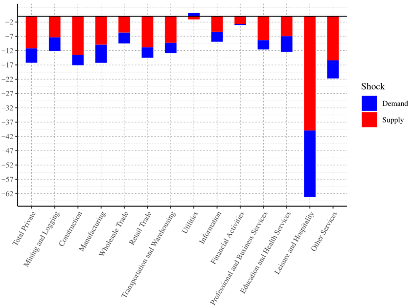
Covid was a (negative) supply and (negative) demand shock.
- The effect of both shocks compensated each other so that effect on inflation was mitigated
After Covid
What was the situation ?
After Covid
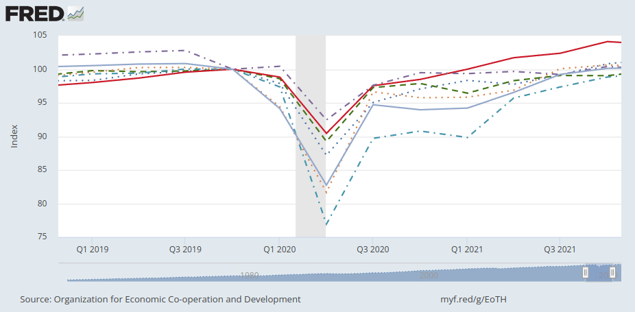- economy had seeminginly recovered without damage (V-shaped recovery)
After Covid: Demand
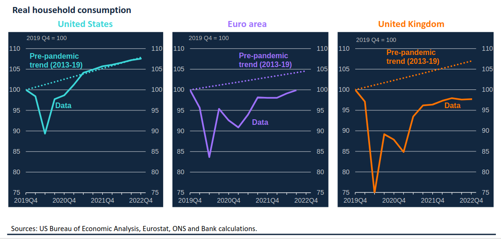- demand recovered quickly
- high savings during Covid
- effect of government stimulus
After Covid: Supply
- labour market remained tight
- local and global supply chains were disorganized
And then the war in Ukraine…
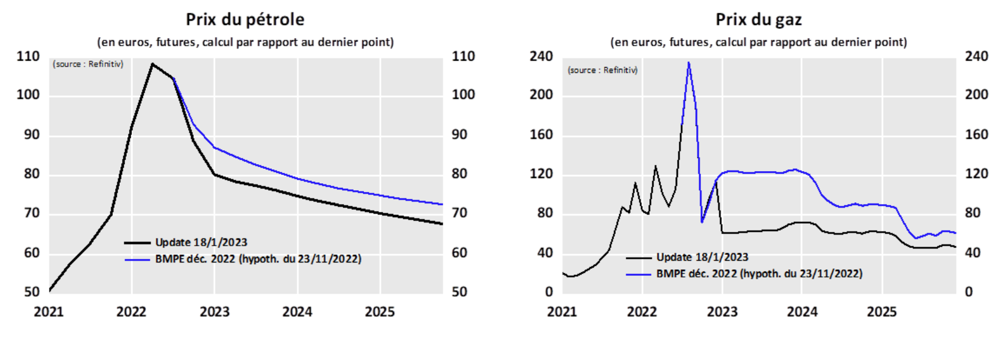
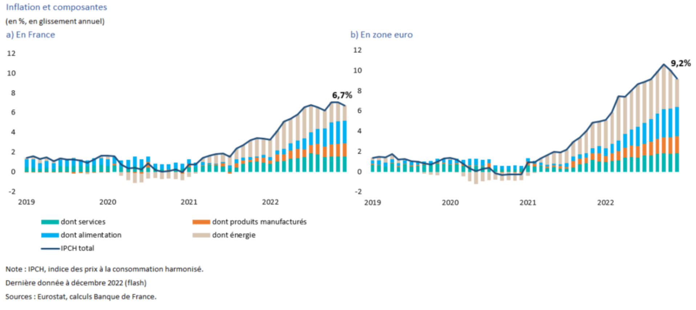
- A poster case of imported inflation
- Two channels
- consumption of gas/oil is directly more expensive
- cost-push: the price of (russian)oil-intensive goods rises more
… added to a persistent disorganization of world supply-chains
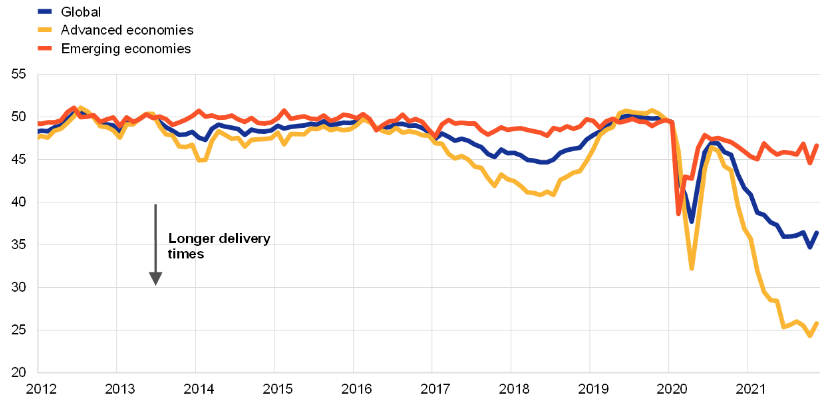Suppliers’ delivery times index (ECB)
- global supply chain remained disorganized
Summary
Covid19 was both
- a demand shock
- a supply shock
which offsetted each other.
After covid and Ukraine’s
- demand recovered fully
- but there are persistent supply shocks
- labour market shortages
- increased cost of energy
- disorganization of supply chain
All these effects add up
- to create inflationary pressures
What comes next?
Will inflation persist?
According to Governor of Banque de France1
Demand-driven inflation seems out of question
- as long as the CB continues its policy rates
Cost-push shocks might be persistent
- oil prices will not revert
- cost of energy might increase further because of the green transition
- countering these shocks, will require supply-side policies
What about the expectations channel?
Expectations Channel
Inflation can be a self-fullfiling prophecy
- in economics, there can sometime be multiple equilibria
In that case, it is the role of the central bank to coordinate the markets on the right equilibrium…
… and anchor expectations

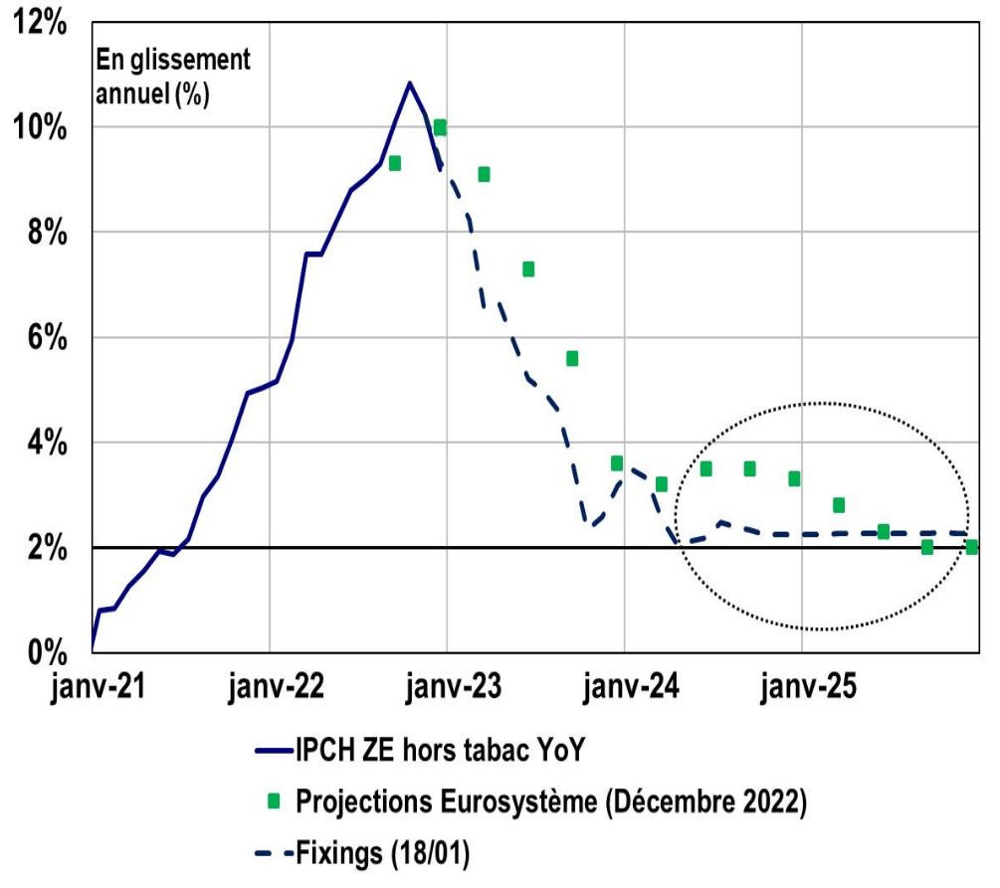 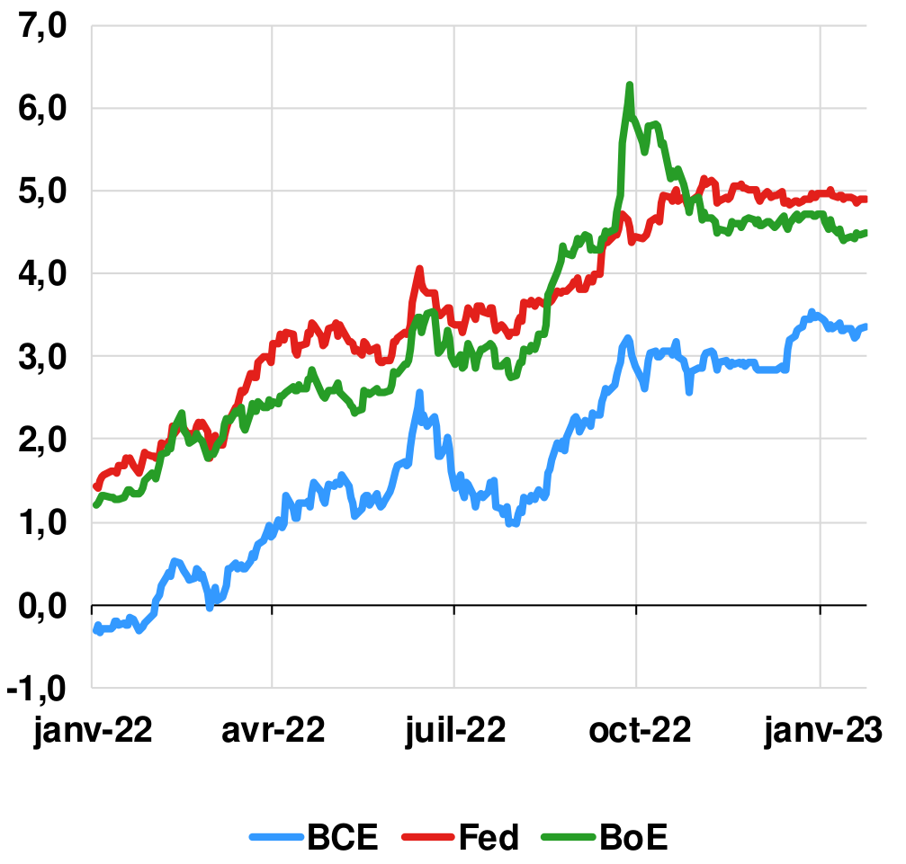
The Market bets on future inflation using swaps. The price of these swaps provide an implicit probability estimate of the market.
- The Market expects inflation to decrease and back to its target in the middle of 2024
- It also expects central bank not to raise interest rates after mid 23